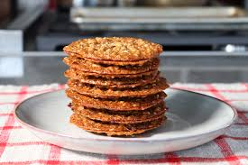

Cookies

Description
This is a blended-coffee treat much like an iced cappuccino you might buy at a restaurant. You can make it non-dairy by using soy milk.
Ingredients
- 2/3 cup butter
- 2 cups quick-cooking oats
- 1 cup white sugar
- 2/3 cup all purpose flour
- 1/4 cup corn syrup
- 1/4 cup milk
- 1 teaspoon vanilla extract
- 1/4 teaspoon salt
Steps
- Preheat the oven to 375 degrees F (190 degrees C). Line 2 cookie sheets with aluminum foil.
- Melt butter in a large saucepan. Remove from heat and mix in oats, sugar, flour, corn syrup, milk, vanilla, and salt until well combined. Drop by level teaspoonfuls 3 inches apart onto the prepared cookie sheets. Spread cookies out thin with a rubber spatula.
- Bake in the preheated oven until golden brown, 5 to 7 minutes. Cool on the cookie sheets.
- Meanwhile, place chocolate chips in the top of a double boiler over simmering water. Stir frequently, scraping down the sides with a rubber spatula to avoid scorching, until chocolate is melted and smooth, about 5 minutes.
- Peel foil from cookies. Spread melted chocolate on 1/2 of the cookies. Top with the remaining cookies.